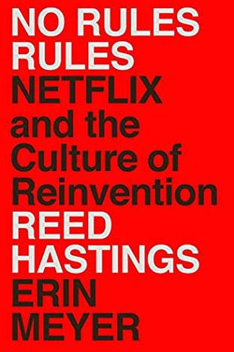

Library › Business & Startups
No Rules Rules — Summary & Key Lessons

Netflix and the culture of reinvention — how the streaming giant built talent density, candor and freedom with responsibility.
📖 OPEN THE FULL INTERACTIVE BREAKDOWN →🌐 Read it in Hindi, Hinglish, Gujarati, Tamil & 22 more languages — free, with audio.
💡 The Big Idea
Netflix CEO Reed Hastings reveals the culture that made Netflix unstoppable: it's a ladder of three pillars. 1) Talent density: hire only 'stunning colleagues' — one exceptional person beats several average ones. 2) Candor: everyone gives honest feedback constantly, in both directions. 3) Freedom with responsibility: remove rules and approvals once people are aligned on context. Each pillar enables the next — and all three create a culture where talent thrives.
🧠 The 5 Key Lessons
Lesson 1: Talent Density: One Star Beats Three Average
Talent Density
Netflix's foundation: the best teams are made of 'stunning colleagues' — top performers who raise everyone around them. One A-player outperforms several B-players, and B-players drag A-players down. So Netflix pays top-of-market and removes people who are merely 'adequate' — with generous severance, not shame.
📖 Example: When Netflix transitioned from DVDs to streaming, Hastings ruthlessly rebuilt the team with world-class engineers and execs. The 'adequate gets severance' policy felt harsh — and produced a team that could out-execute everyone. Read the full example →
⚡ Do this: Apply talent density to YOUR projects: who are the two people who make everything better? Spend more time with them; stop letting 'adequate' set the bar.
Lesson 2: Radical Candor: Feedback Is Love
Candor
Netflix's rule: give honest feedback immediately, in person, with positive intent — up, down and sideways. Hiding problems to be polite is treated as disloyalty to the team. The practice: 'feedback is a gift', and giving it is a duty, not an option.
📖 Example: New Netflix executives describe their shock at being told, directly and calmly, what they were doing wrong — and how quickly they improved. The culture even runs 'feedback sessions' where everyone critiques each other in front of the team. Read the full example →
⚡ Do this: Give one piece of honest, specific, kind feedback this week — to a colleague, friend or boss. Start with a positive observation to build trust.
Lesson 3: Freedom With Responsibility
Freedom & Responsibility
Once you have stars and candor, you can remove the rules: no expense-policy police, no approval chains, no vacation tracking. People get context (the strategy, the constraints) and then freedom to decide. The catch: it only works with high talent density — freedom without stars is chaos.
📖 Example: Netflix has no formal vacation policy and no travel-approval process; employees decide. It works because the culture's context is clear and the people are excellent — the freedom becomes a signal of trust that they repay with responsibility. Read the full example →
⚡ Do this: Find one rule you impose on yourself (approval-seeking, over-checking) and replace it with context + trust for a week. See what happens.
Lesson 4: The Keeper Test: Would You Fight to Keep Them?
The Keeper Test
Every manager periodically asks: 'If this person told me they were leaving for a competitor, would I fight hard to keep them?' If the honest answer is no, it's time to let them go — with generosity — because keeping 'adequate' people quietly drains the team. This keeps talent density high without cruelty.
📖 Example: Managers at Netflix run the Keeper Test on every team member; people who fail get generous severance and honest feedback about why. Those who stay know they're genuinely wanted — which builds commitment. Read the full example →
⚡ Do this: Run the Keeper Test on your inner circle: who would you fight to keep? Invest in them visibly this week.
Lesson 5: Context, Not Control
Context
The final pillar: instead of controlling decisions with approvals, spread context — strategy, data, reasoning — so everyone can make aligned decisions themselves. Netflix shares sensitive strategy widely (including with new hires) because informed people make better calls than controlled people.
📖 Example: At Netflix, even junior staff attend strategy reviews and see company metrics; a customer-service rep once used that context to fix a product issue without asking permission. Control scales badly; context scales. Read the full example →
⚡ Do this: Next time someone asks you 'what should I do?', explain the WHY and the constraints — then let them decide. Teach context, not instructions.
✅ 5-Step Action Plan
- Identify your stunning colleagues — invest in them.
- Give one piece of honest, kind feedback this week.
- Replace one approval rule with context + trust.
- Run the Keeper Test on your circle and act on it.
- Explain the why before the what, all week.
💬 Best Quotes from No Rules Rules
- “Adequate performance gets a generous severance package.”
- “The best thing about being a boss at Netflix is that you don't have to be a boss.”
- “We're a team, not a family — we're like a pro sports team, and the coach decides who plays.”
Interactive version: mark lessons as read, listen in your language, share quote cards.